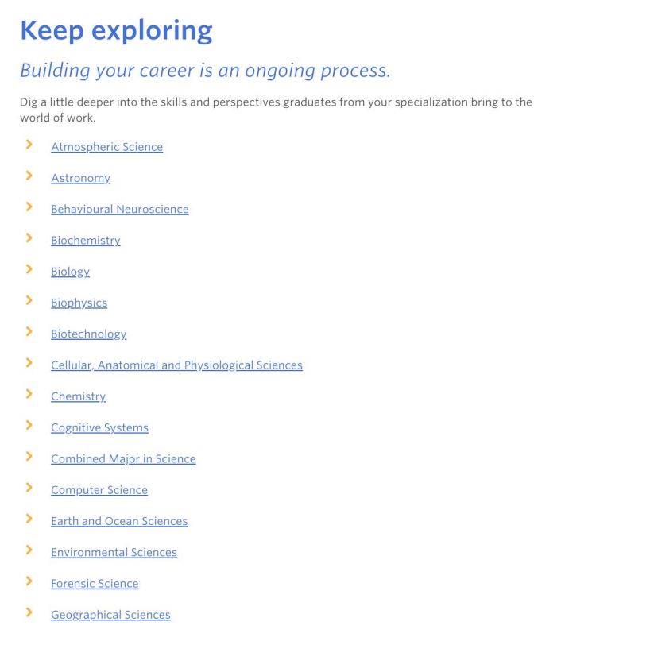
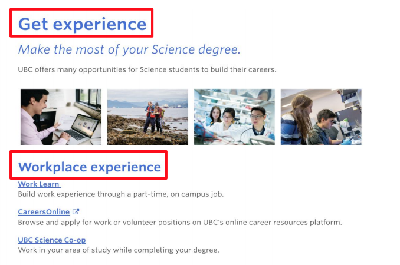
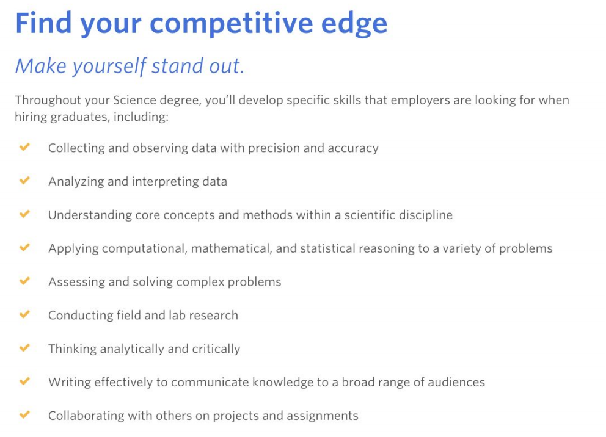

Background
UBC UX Lab is a hands-on program under UBC Student Communication Services where
students learn about user experience and conduct experiments to improve the services
that UBC provides its students.
I was part of the summer 2019 cohort and one of the projects I worked on was to conduct
a usability study on the newly launched What can I do with my Science Degree webpage to
understand how science students are navigating the web page.
The What can I do with my Science Degree webpage was launched on May 22, 2019 by UBC
Student Communication Services as a resource for students.
Research Question
How are science students navigating the What can I do with my Science Degree webpage?
The web page as of June 2019. (Note the Keep Exploring section is a unsorted
list of specializations in Science).
Methodology
To evaluate this resource, we ran usability tests with UBC science students in different
year levels that consisted of a survey, a perception test, and a follow up interview.
Students were allowed to freely browse the web page for 3-5 min with the talk-aloud method.
Our team scheduled weekly research pop-ups at the common areas of some of UBC's largest
buildings.
1. Pre-screen Survey: this allowed us to understand the background of each user, such as
what year level they are in, their future career prospect, and what they expect on the
resource page etc.
2. Perception Test: this allowed us to find the pain points on the web page and take notice
of certain functions that were not as intuitive.
3. Follow-up Questions: this allowed us to further question the user on their reaction to the
web page and understand why they may have experienced certain issues.
Data Analysis
We managed to collect data from a total of 12 undergraduate science students. To analyze
the data, we created an affinity diagram to categorize similar trends.
Key Findings
While the general feedback we received was positive, and many users thought the web page
was clean, organized and easy to read. There were some minor takeaways for our study:
1. Most users expected the specializations (Keep Exploring) section to be near the top as
it was perceived to be more specific to each student and more helpful. As well, the list
format of the specializations was troublesome to navigate as it was just by alphabetical
order

2. Some headers and subheaders looked too similar in font size

3. Since each specialization is different, the competitive edge section seemed to
have bullet points that were too broad and general

For a more detailed look at our results, please take a look at our
presentation.
Reflection
One major limitation we had in this study was that the sample size was quite small
compared to the real population of UBC Science students. However, according to an article
written by Jakob Nielsen from the Nielsen Norman group, a leading UX research company,
running many small tests with five users may be more efficient and potentially more effective
than running elaborate usability tests with numerous users.
Another limitation was that the participants recruited for each year level were not
representative of the UBC student population. Since the tests were conducted on campus,
we were not able to recruit incoming or prospective students. Future usability testing
on the page with these groups of students could be beneficial in understanding how
these users navigate the page.
From the usability testing, there are a few recommendations for the webpage content
and layout. The first being to reconsider the location of the list of specializations
on the page, or reformat the layout. The second being to make the bullet-point
descriptions in the “Competitive Edge” section more specific to each specialization
and relocate them to the respective specialization page. Further research can also be
conducted on the specialization pages with students from those specific specializations.